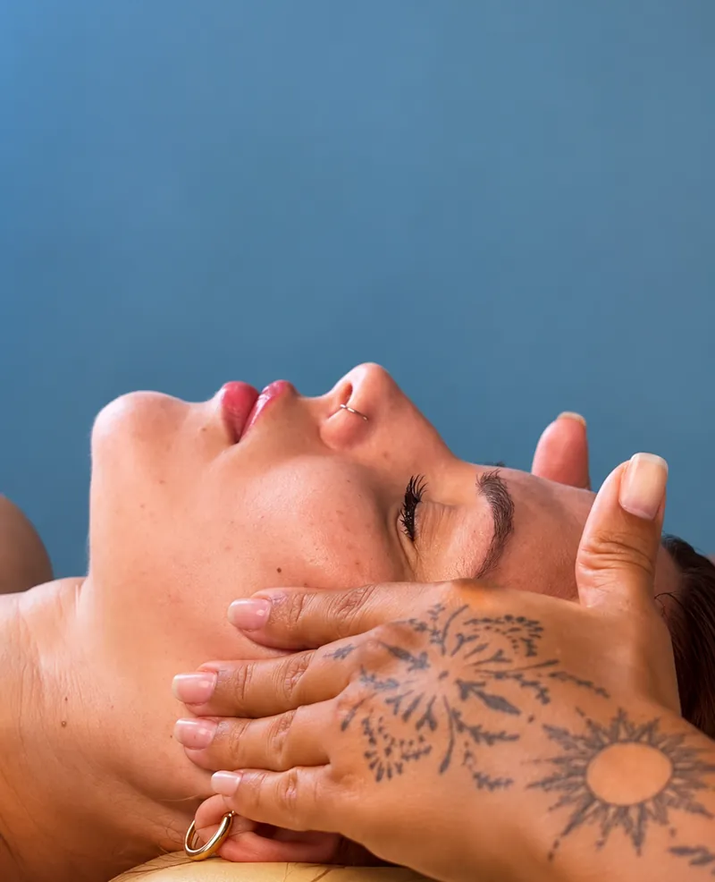
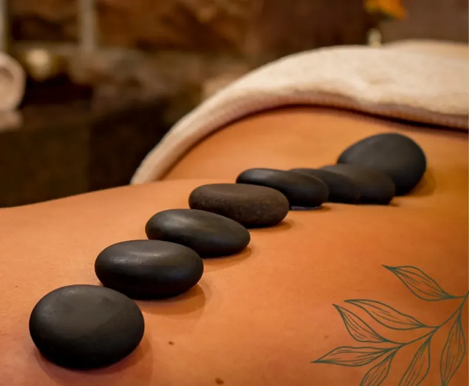
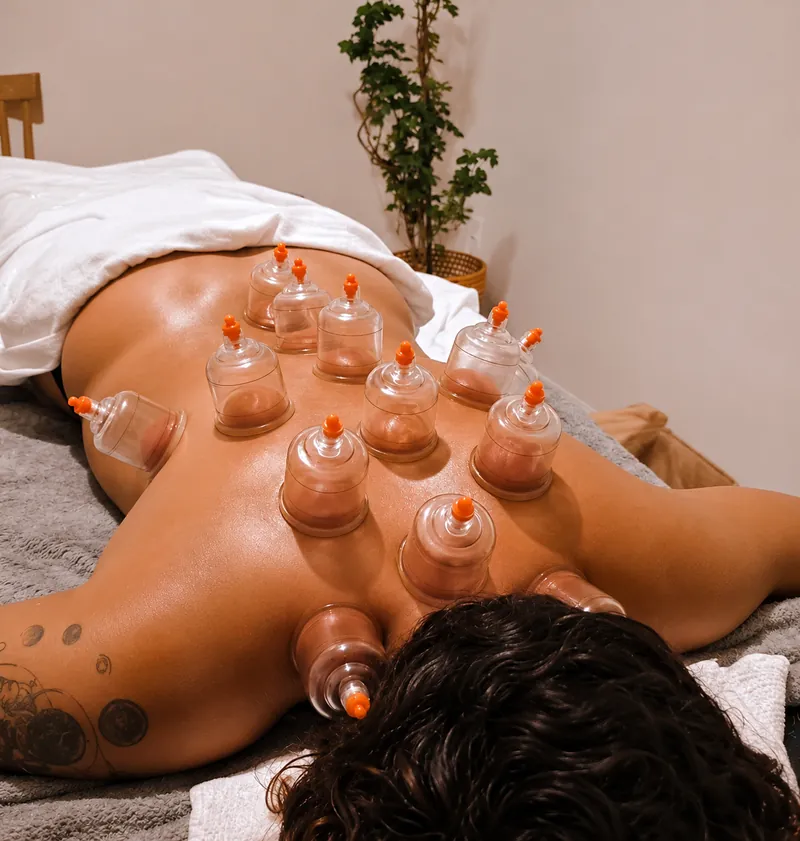
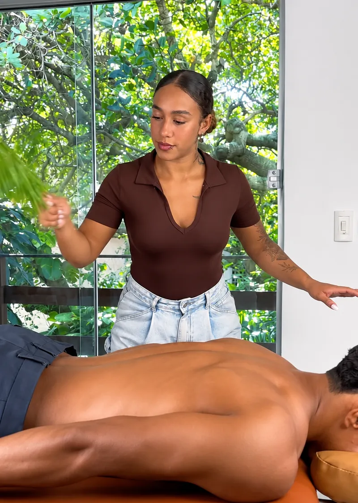
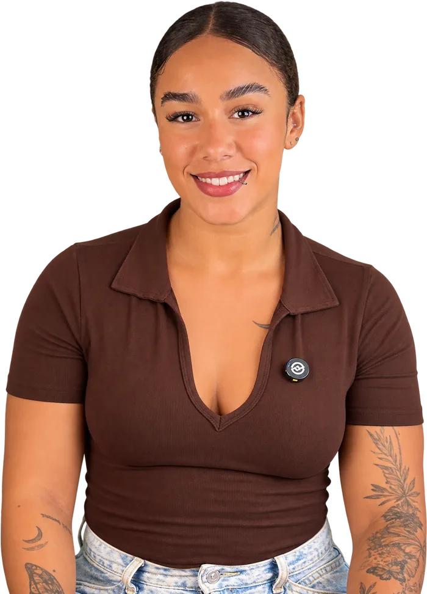
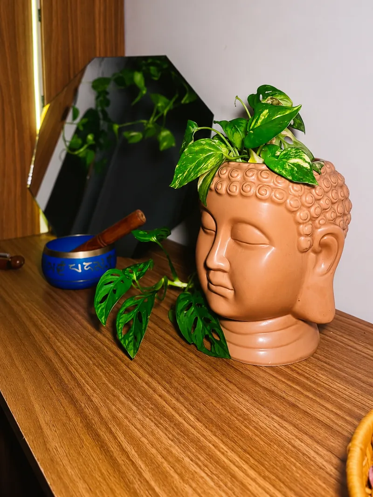

Massagem relaxante
Movimentos lentos e contínuos para o corpo sair do modo alerta. Para quem chega exausto e quer sair leve.
Sou a Emylly, massoterapeuta em Natal. Cada sessão começa pelo que o seu corpo está dizendo: massagem terapêutica, relaxante ou energética, no ritmo que você precisa.
Massagem não é só técnica. É escuta, cuidado e respeito.
Emylly Oliveira
Escolher quem sabe avaliar, ouvir e adaptar o atendimento é o que faz o toque ser terapêutico, e não invasivo. Por isso nenhuma sessão aqui segue um roteiro pronto.
Quando a cabeça entra em alerta, pescoço, ombros e parte alta das costas ficam contraídos por horas. Vem a dor, a rigidez e às vezes a dor de cabeça. A massagem pode ser o primeiro passo para soltar esse peso.
Cólica, inchaço, dor nas costas e irritação têm explicação, e também têm cuidado. Toques específicos e técnicas de relaxamento ajudam a atravessar esses dias com menos desconforto.
Muito tempo sentado, celular na mão e a semana inteira nos ombros. Uma hora de cuidado muda a forma como você vive o resto da semana.
Você me conta o que está sentindo e eu indico a técnica. Se o corpo pede mais de uma, a gente junta na mesma sessão.

Movimentos lentos e contínuos para o corpo sair do modo alerta. Para quem chega exausto e quer sair leve.
Foco nos pontos de tensão e nas regiões que doem: pescoço, ombros, lombar. Uma avaliação antes define a pressão certa para o seu corpo.
Inclui liberação miofascial, que é soltar a camada que envolve o músculo.

O calor das pedras de basalto aprofunda o relaxamento.

Copos de sucção que descolam os tecidos e soltam a musculatura.
Manobras leves e ritmadas que ajudam o corpo a eliminar a retenção de líquido. Também no pós-operatório, com liberação do seu médico.
Para a tensão que mora na mandíbula, na testa e nas têmporas.
Pressão em pontos dos pés ligados a outras partes do corpo.
Técnica tailandesa com um tecido que guia alongamentos e trações. Ajuda a tirar a rigidez do pescoço.
Valores e duração de cada sessão pelo WhatsApp. [CONFIRMAR lista atual de massagens e durações]
A luz baixa, o ambiente se prepara e o corpo vai soltando aos poucos. São quatro momentos.
Antes de tocar, eu pergunto. Onde dói, como foi a sua semana, como você dorme. Massagem também é escuta.
“Mais do que aliviar uma dor, estou aqui para te ouvir, ouvir o que seu corpo tem a dizer e te acolher.”
Eu observo a postura, a respiração e os pontos de tensão para decidir a técnica e a pressão. Nada de força por força.

A massagem acontece no seu ritmo. Se em algum momento a pressão incomodar, a gente ajusta na hora.
“A massagem é como uma dança, que flui como o som em cada movimento.”
Você levanta sem pressa, bebe água e sai com orientações simples para o corpo continuar leve em casa.
“É nos pequenos respiros que a gente se encontra.”

Atuo com massoterapia desde 2021, com massagens terapêuticas, relaxantes e energéticas. Escolhi uma profissão que acolhe, alivia dores e faz do cuidado a minha forma de transformar o dia de alguém.
Todos os dias, ao colocar minhas mãos em alguém, eu me conecto com algo que vai muito além da técnica.
[CONFIRMAR formação e cursos]
Minha série no Instagram com profissionais convidadas, sobre como corpo e mente conversam.
Alinhar corpo e mente é sempre a melhor opção. Arraste e assista aos episódios.
Com a psicóloga Karoline Santos, sobre como as emoções aparecem no corpo.
Assistir no InstagramExercício e massagem, aliados.
Com a personal Laryssa Pio, sobre movimento, recuperação e bem-estar.
Assistir no InstagramSiga para ver o próximo.
Seguir @toquedadeusa_Maca portátil em eventos esportivos, encontros e dias de praia. Já esteve na Arena de Futevôlei do Leme. [CONFIRMAR se atende fora e onde]
Um voucher de massagem para quem você ama, ou para você mesma. Amor-próprio também merece ser celebrado.
Presentear com um voucherNota no Google, com as avaliações reais de quem já passou por aqui.
Ver avaliações no Google[CONFIRMAR depoimentos]
Aqui entram 2 ou 3 depoimentos reais do destaque “Feedbacks”, com o primeiro nome e a autorização de cada cliente.

Luz baixa, plantas, o cheiro do óleo essencial. Um espaço pensado para o mundo lá fora ficar em silêncio por uma hora.
Seu corpo e sua alma agradecem. Me chama no WhatsApp e a gente encontra o melhor horário para você.
Agendar pelo WhatsApp